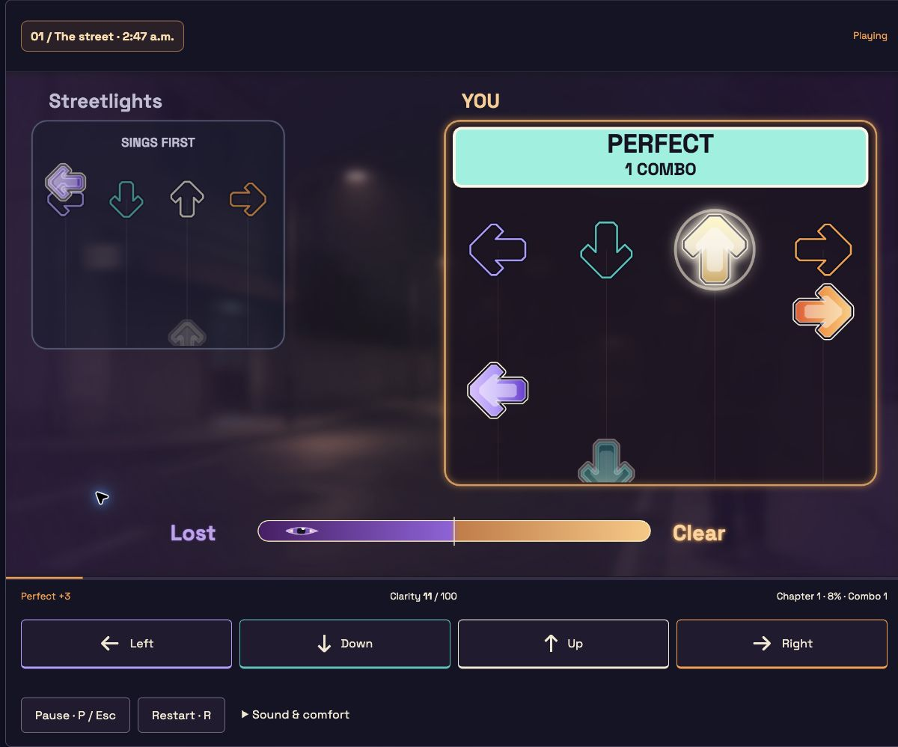
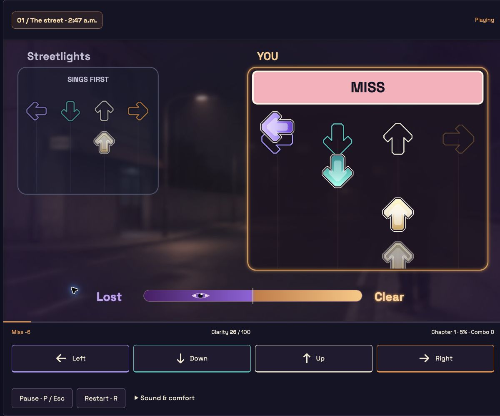
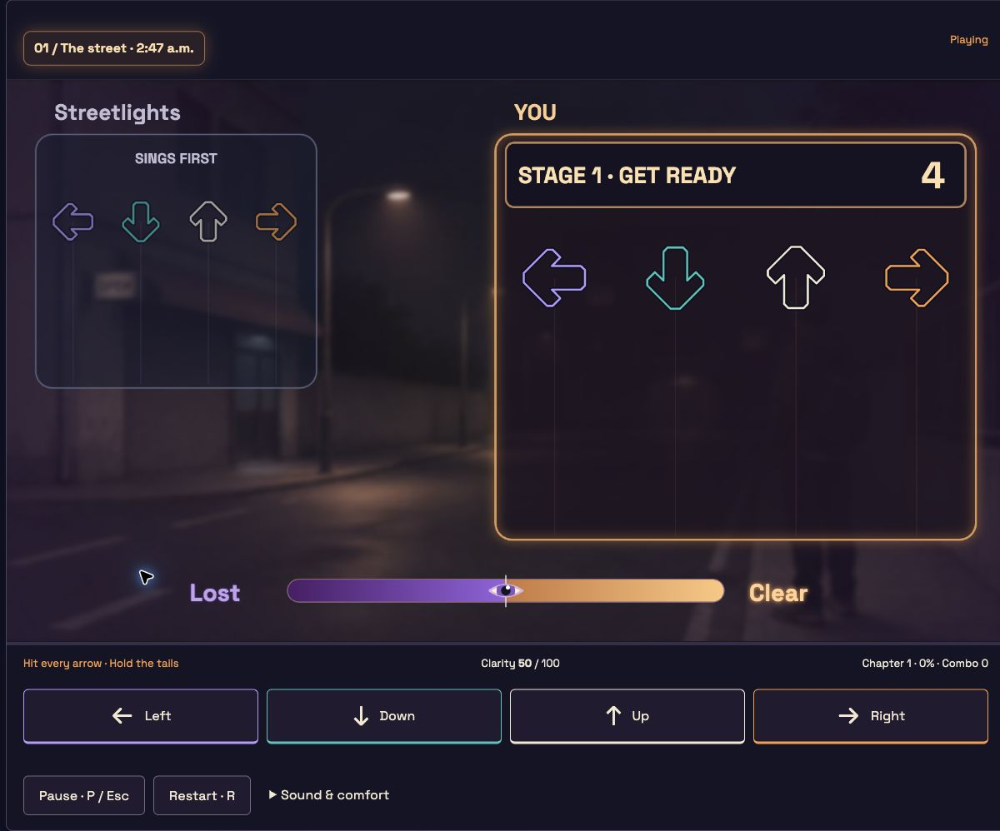
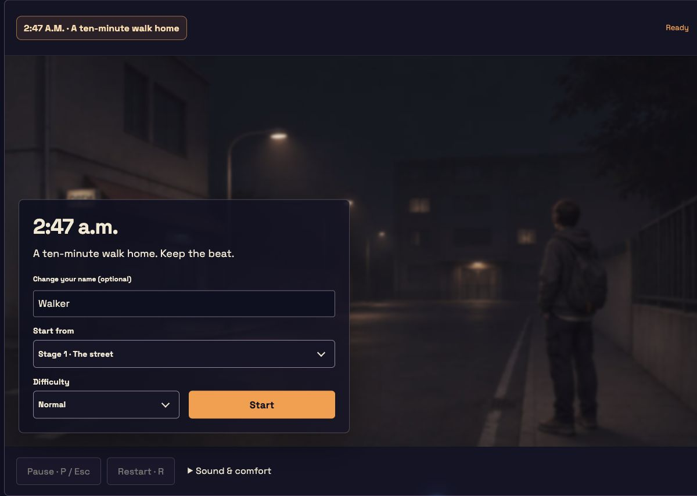

Recognize a successful hit
My professor found successful inputs hard to recognize.


AI for Design / Week 03 / Test, refine, and publish
A ten-minute walk home.
Something is wrong.
Final stage goal: finish above 50 clarity for the Clear ending.
ReadyGet home before the street stops making sense.
01 / Concept
At 2:47 a.m., the Walker heads home after another late night on a project they still doubt. They have barely slept in days. The ten-minute walk becomes unreliable: streetlights seem to sing, a Stranger seems to know their name, and their reflection sings first. Only the beat in their headphones can be trusted. The game never confirms why this is happening.
This game develops the Week 1 game proposal. Follow the visible arrows through three encounters, using the beat to stay grounded while the surroundings become unreliable. The game has no ghost notes.
02 / Controls
03 / Process note
My classmates praised the late-night setting, story screens and connection between rhythm and holding onto reality. They said the instructions and countdown helped them prepare. Their suggestions focused on making the player’s arrows more distinct from the caller’s, especially on small screens, making misses visibly intensify the hallucination, and showing early or late timing. My professor appreciated the visual direction but found successful inputs hard to recognize, recommending stronger hit animations and sound to make correct timing more rewarding.
The left images are screenshots from my earlier published draft. The right images were captured from the current local game during actual play and preparation. Select any image to view it at full size.
My professor found successful inputs hard to recognize.

Classmates asked for clearer miss feedback and a more obvious player side.


I refined the countdown’s placement so preparation and play share the same focus.


My follow-up testing led to optional challenge and easier access to individual stages.


I chose the exhausted Walker’s uncertain journey home at 2:47 a.m., keeping the beat and arrows reliable while the surroundings become untrustworthy. The Stranger and the cause remain ambiguous. I chose short instructions instead of a practice round, removed ghost notes, kept the game family friendly and added optional Hard charts. Claude helped with research and organizing ideas during the early game proposal steps. Codex helped implement and test revisions based on my classmates’ feedback, my professor’s comments, and my own design decisions. OpenAI image generation produced the scene art; I directed its visual refinement.
Classmate and professor playthroughs guided these revisions. I retained the instructions and countdown that classmates found helpful; my own follow-up reviews refined the sound and spacing. Nineteen automated checks pass, including timing, both difficulty charts, progression, pausing, failure and both endings. They do not measure perceived loudness or physical-device latency. The latest refinements still need a fresh independent playtest.
03 / Current version
Start opens three short story screens before the first song. A short instruction screen and four-second countdown prepare you for the first song. Three charts build from steady steps to syncopation and holds. The final level has fewer rapid clusters and a smaller miss penalty. Three-screen, music-backed transitions connect the street, bus stop and bedroom. Transitions and failure screens wait for you to start. The default character name is Walker.
Still rough: hand-authored charts, mostly still cinematic artwork and procedural tones. Input uses the audio presentation clock and event timestamps, with a more forgiving hit window. The supplied music downbeats and physical-device latency still need listening tests.
04 / One improvement after testing
My friend clicked Start, and I was not sure they knew they could change the name. The countdown was too quick: they missed the first notes while working out what was happening. It took a couple of tries to learn the arrow timing.
I made the name field explicitly optional and editable, added a short instruction screen after the opening dialogue, and extended the first-stage countdown to four seconds. I also centered the arrow panels and gave them a muted contrasting fill and border. These changes aim to help a new player prepare without adding a practice round. After a follow-up test, I reported that the revised opening passed the friend test.
05 / One useful AI exchange
Summary of our exchange: I reported that my friend missed the opening notes and needed clearer preparation. AI offered two options: a short instruction screen with a slower countdown, or an interactive practice round. I chose the instruction screen and slower countdown because I wanted clear preparation without a practice round. This kept the story opening while giving the player time to understand the controls.
06 / Next week
Playtest the revised story with three first-time players: can they explain where the Walker is going and what feels wrong? Check the music downbeats, calibrate device offsets, tune chart density and improve character motion.
Test touch play on a physical phone, including quick repeated taps and overlapping holds. Publish the refined version only after review.
Music: Dream Aeterna by Shane Ivers - https://www.silvermansound.com
Music: The Other Place by Shane Ivers - https://www.silvermansound.com
Music: Acid Trance by Shane Ivers - https://www.silvermansound.com
Music: Faded Dream by Shane Ivers - https://www.silvermansound.com
Creative Commons Attribution 4.0. Recordings are excerpted, faded and, in the Lost ending, filtered. Sound effects are generated in code.
Scene artwork was generated with OpenAI’s image-generation tool for this fictional game; it is not photographic evidence. No Friday Night Funkin’ character art is used. Claude helped with research and organizing ideas during the early game proposal steps. Codex helped implement and test revisions based on my classmates’ feedback, my professor’s comments, and my own design decisions.